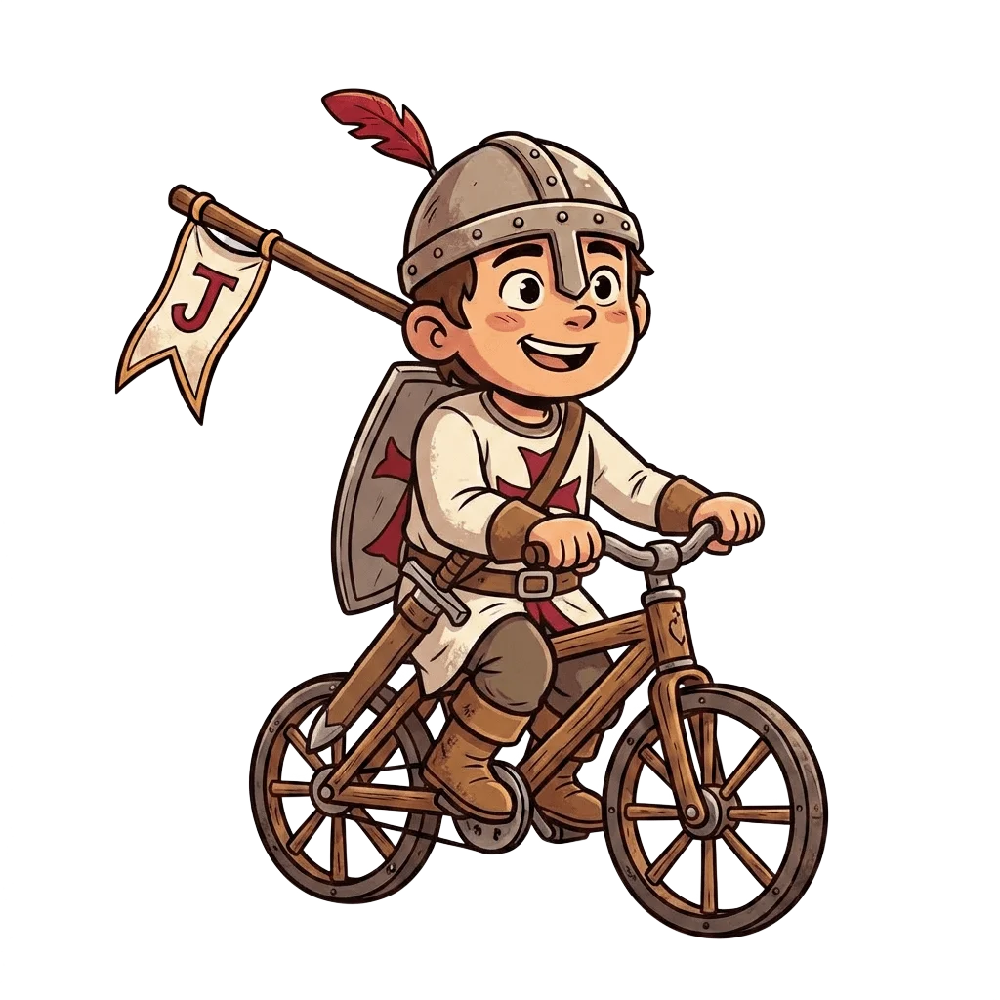
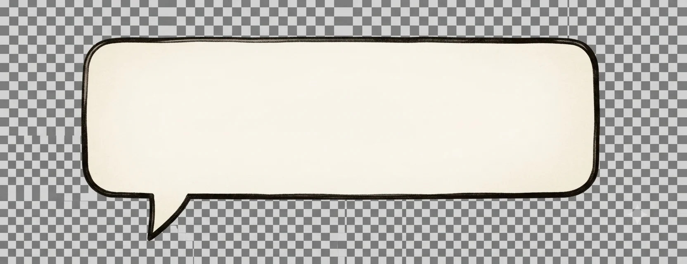
👆 Toca un punto del camino para descubrir su secreto
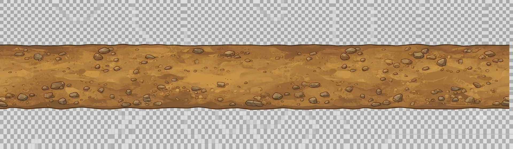
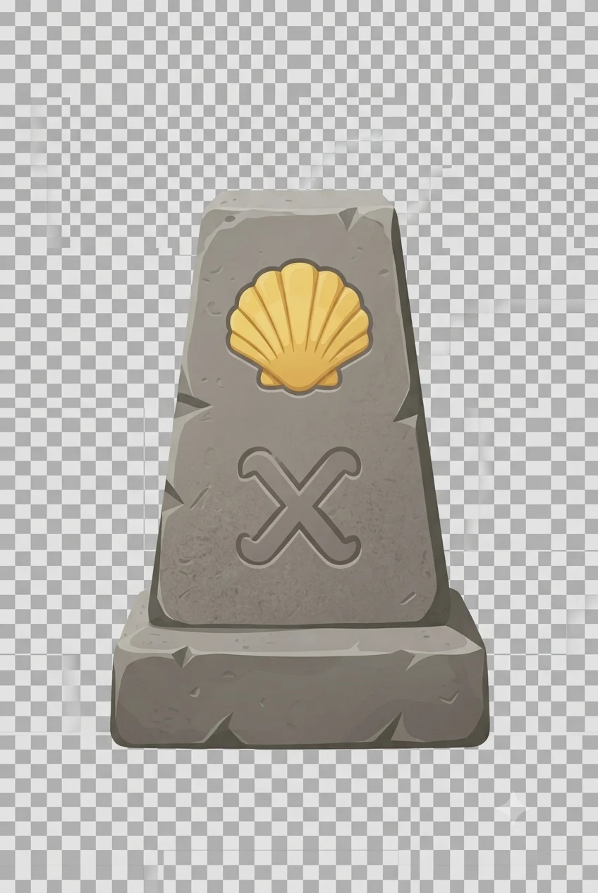
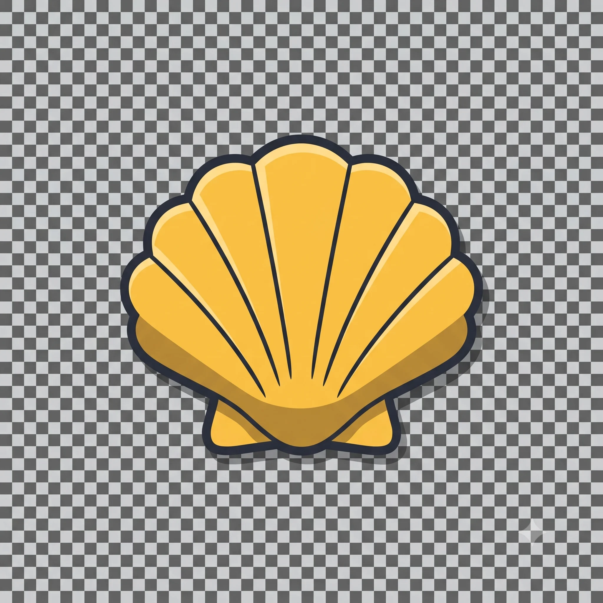
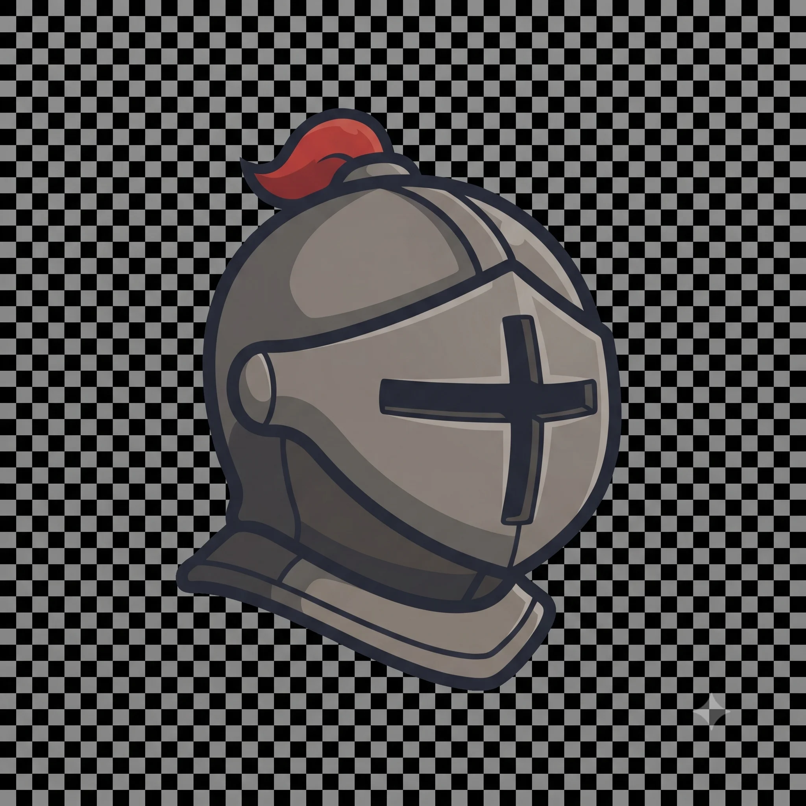
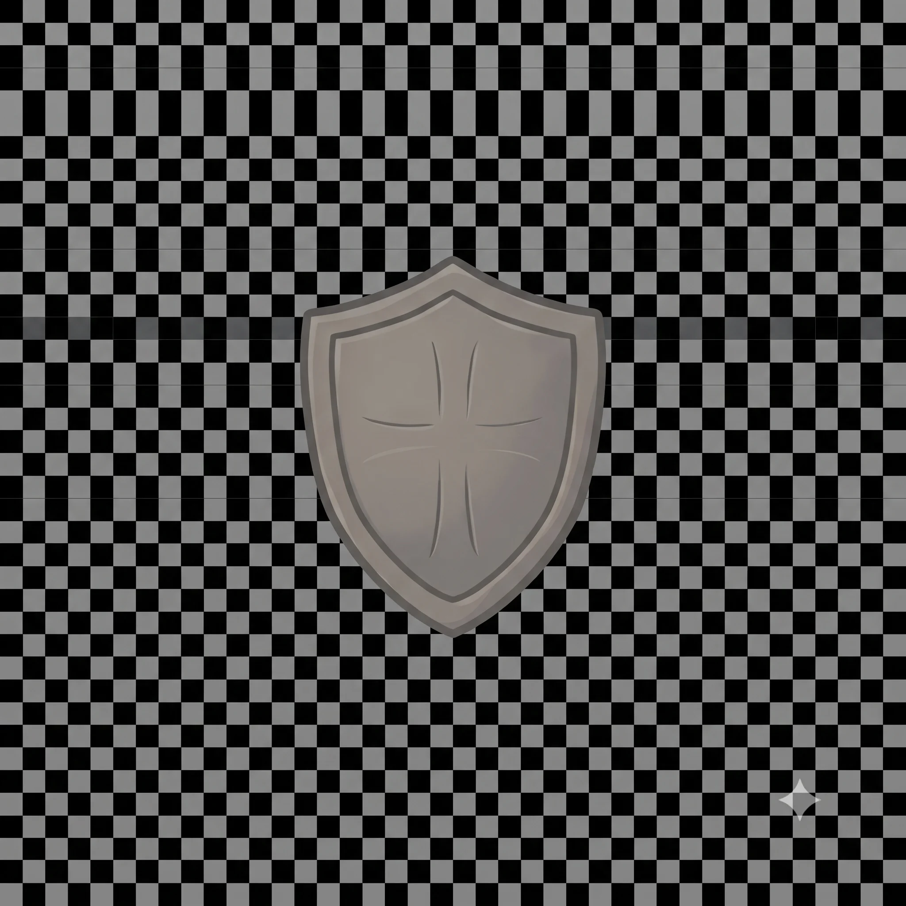
Encuentra el Silo de Carlomagno en Roncesvalles y hazte una foto junto a él antes de salir.
Cruza el puente de Zubiri y cuéntale a tu padre la leyenda de Santa Quiteria.
Localiza en Villava algún recuerdo dedicado a Miguel Induráin.
Identifica tres árboles distintos en el tramo del Alto de Erro: haya, roble y pino.
Entra en Pamplona atravesando la Ciudadela hasta llegar al Casco Viejo.
Al llegar a Pamplona: garroticos de Beatriz o chandríos en el Casco Viejo — o, si el templario prefiere algo más fresco, merienda en McDonald's. ¡Tú eliges, héroe!
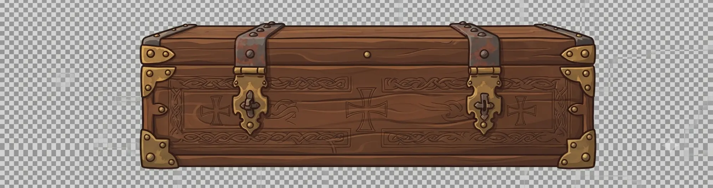
Credencial de Templario · Sellos de esta etapa
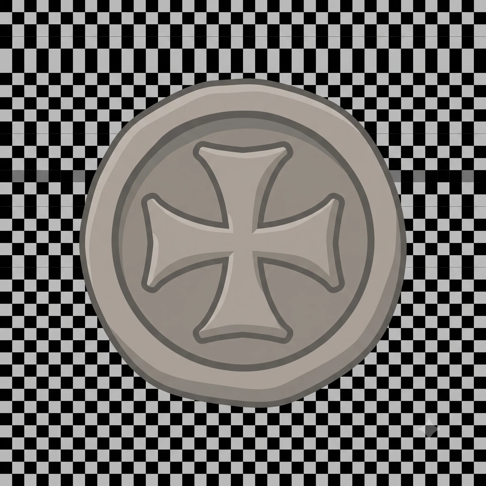
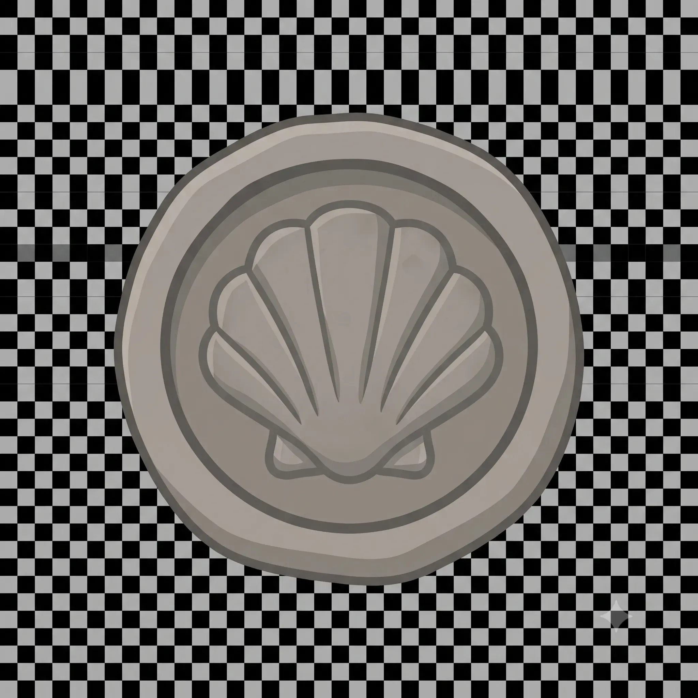
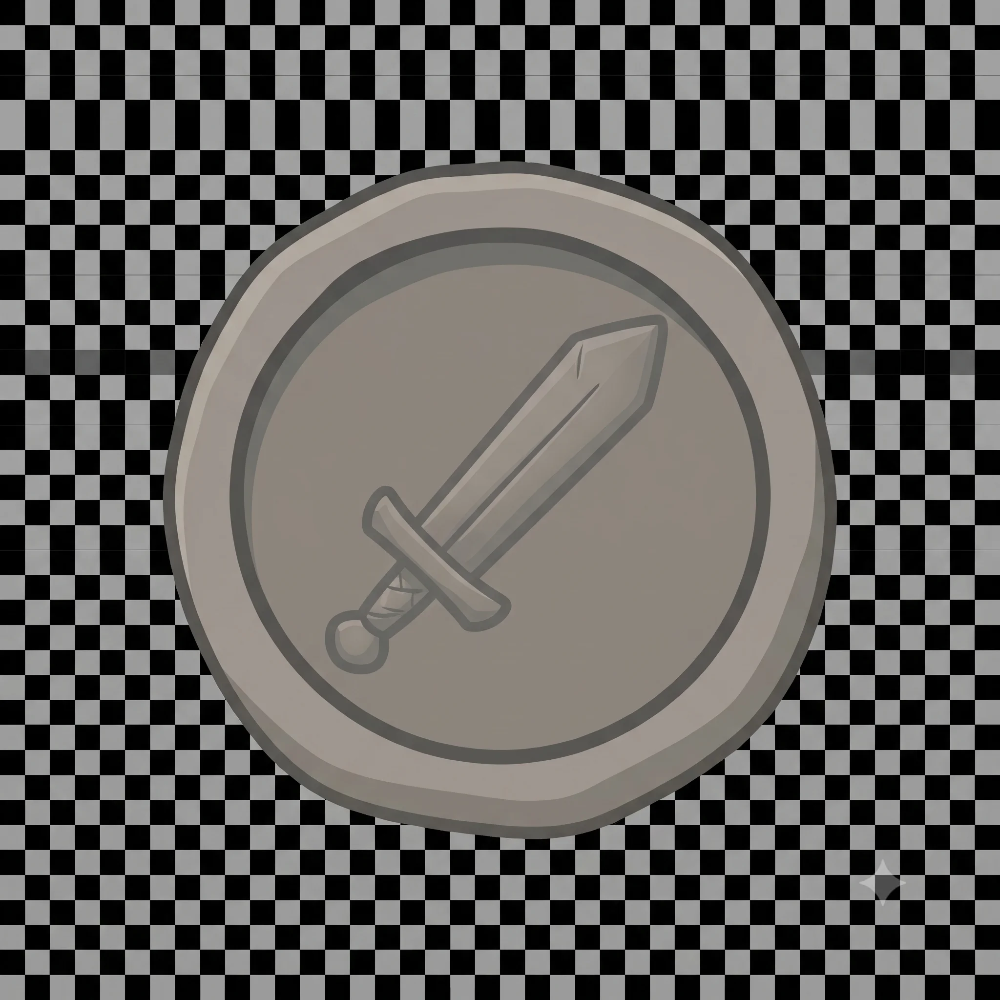
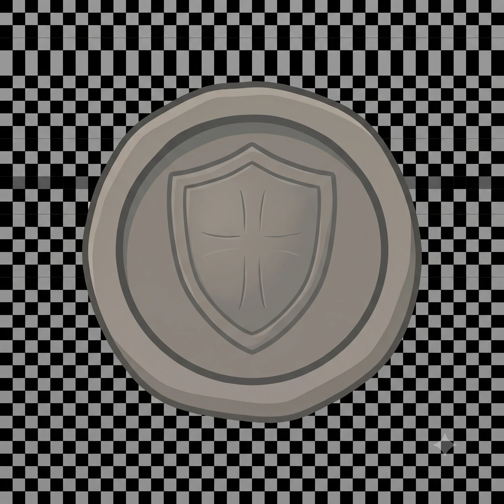
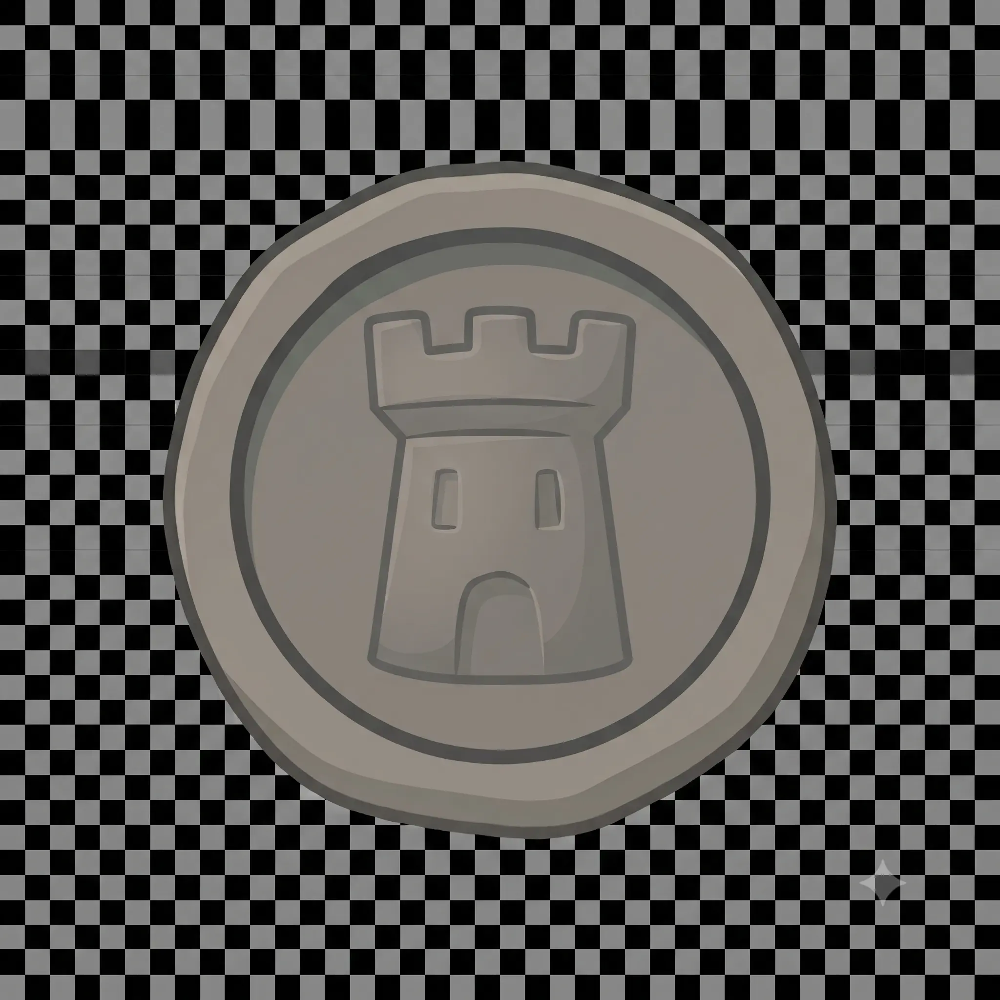
| Salida | Roncesvalles, 7:30–8:00 h |
| Llegada prevista | Pamplona, 13:00–14:00 h |
| Avituallamiento | Burguete, Espinal, Zubiri y Trinidad de Arre |
| Tramo exigente | km 6–17 (Mezkíritz + Erro), resto cómodo |
| Alojamiento | Pamplona, Casco Viejo — confirmar guardia de bicis |